Bigtable 论文阅读
文章目录
1. Bigtable 是什么？
Bigtable 是一种压缩的、高性能的、高可扩展性的，基于 Google 文件系统（Google File System，GFS）的数据存储系统，用于存储大规模结构化数据，适用于云端计算。
Bigtable 的设计是为了能可靠地处理 PB 级的海量数据，使其能够部署在千台机器上。Bigtable 借鉴了 **parallel databases（并行数据库）**和 **main-memory databases(内存数据库)**的一些特性，但是提供了一个完全不同接口：
- 不支持完整的关系数据模型，只为用户提供简单的数据模型；
- 模型支持动态控制数据的分布和格式，在 Bigtable 中，数据并没有固定的格式，用户可以自定义数据的 schema；
- 允许客户机自己推断（reason）底层数据存储的 locality propertie；
- 支持使用列名或者行名作为索引，名字可以是任意字符串；
- 将数据视为未解释的字符串，尽管客户端未必真的就是用字符串格式进行存储，比如客户端经常将各种 structured and semi-structured（结构化和半结构化，它们不是纯文本）的序列化到 BitTable 的字符串中；
- 允许客户端动态控制 BitTable 的数据来源：内存 or 磁盘；
正如论文引言所描述的那样，Bigtable 实现了如下四个目标：
- Wide Applicability - 广泛的适用性；
- Scalability - 可伸缩性（特指横向）；
- High Performance - 高性能；
- High Availability - 高可用性；
Bigtable 论文声称 Google Bigtable 在其公司内部应用十分广泛，基于它设计的应用程序有 Google Analytics, Google Finance, Orkut, Search, Writely, and Google Earth。当然，时至今日（论文 2006 年发表）上面部分应用已经停止服务了。这些应用在如何使用 Bigtable 上也有所区别：
- 数据格式不同：不同的应用之间存在许多类似的数据格式，但是同时也有着各自的数据格式侧重，比如：URL、网页内容、Web 索引、卫星图像；
- 吞吐量和延迟的不同侧重：基于 BitTable 的服务既涉及面向吞吐量的批处理作业，又囊括了面向终端用户的延迟敏感数据服务；
- 集群规模不同：这些服务有的基于拥有少量主机的 Bigtable 集群，有的基于拥有数千台主机的 Bigtable 集群；
2. Data-Model 数据模型
Bigtable 直译过来就是大表，既然是张表，你可能在第一时间猜想到其数据结构可能类似于 MySQL 中表的抽象逻辑结构，这正如下图所示：
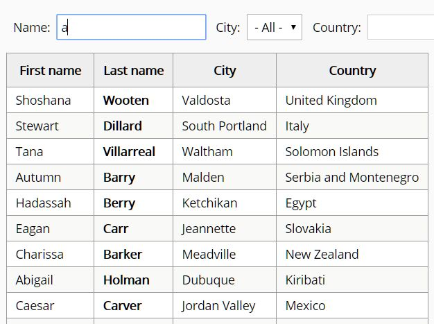
但是，Bigtable 的名字可能的确具有一定的迷惑性。其逻辑上可以提供表的功能，但在物理结构上基于 Map 实现，正如 Bigtable 论文在 Data-Model 章节的开头所说：
A Bigtable is a sparse, distributed, persistent multidimensional sorted map.
翻译过来就是：Bigtable 是一个稀疏、分布式、持久化存储的多维有序映射表，简单理解一下这句定义所阐述的几个关键点：
-
Persistent：一个表是一个包含海量 Key-Value 键值对的 Map，数据是持久化存储的；
-
Distributed：这个大的 Map 需要支持多个分区来实现分布式；
-
Multidimensional Sorted Map：这个 Map 按照 Row Key 进行排序，这个 Key 是一个由
{Row Key, Column Key, Timestamp}组成的多维结构； -
Sparse：每一行列的组成并不是严格的结构，而是稀疏的，也就是说，行与行可以由不同的列组成：
Row Columns Row1 {ID, Name, Phone} Row2 {ID, Name, Address, Title} Row3 {ID, Address, Email}
Bittable 的数据模型具体来说就是：Bigtable 的每一个键值对的 Key 都为 Row key + Column key + Timestamp 的结构，Value 则是字符串：
(row:string, column:string,time:int64)->string
举一个具体的例子：比如，一个存储了大量网页及其相关信息的表 Webtable，Webtable 使用 URL 作为行名，使用网页的某些属性作为列名，网页的内容存入 contents 列中，并使用获取该网页的时间戳标识同一个网页的不同版本。在 Bigtable 中，Webtable 的存储范例如下图所示：
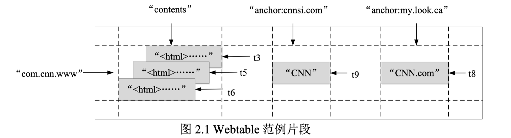
学习 Bigtable 论文的第一步便是学习其专有名词，如下：
-
Row Key
行关键字可以是任意字符串，最大容量为 64KB，但是在大多数场景下，字节数只有 10～100 Bytes 左右。Bigtable 按照 Row key 的字典序组织数据。
什么是字典顺序？ASCII 码表中的后面的字符比前面的字符大，比如 c>a，因为 Row Key 本质就是字符串，因此可以使用字典顺序进行排序。
利用这个特性可以通过选择合适的行关键字，使数据访问具有良好的局部性。如 Webtable 中，通过将反转的 URL 作为行关键字，可以将同一个域名下的网页聚集在一起。
网站的反转指的是 www.google.com 反转为 com.google.www，类似于 Java 中的 package 的命名。
为什么需要进行翻转？
因为 URL 解析过程本身就是从后往前解析的，这符合 URL 的使用逻辑。另一方面，方便域名管理，将同一个域名下的子域名网页能聚集在一起。
拿 www.github.com 作为一个 URL 的一个例子，为 www 开头的 URL 建立集群的意义并不大（没有区分度，相当于没有建集群），但是将 com.github 域名建立集群就有一定的使用用途了。
注意：在 Bigtable 中仅仅涉及一个 Row key 的读/写操作是原子的。
-
Tablet
在 Bigtable 中，Row Key 相同的数据可以有非常多，为此 Bigtable 中表的行区间需要动态划分（也就是横向进行数据分区，横向的意思便是将表横着切），每个行区间称为一个 Tablet（子表）。Tablet 是 Bigtable 数据分布和负载均衡的基本单位，不同的子表可以有不同的大小。为了限制 Tablet 的移动成本与恢复成本，每个子表默认的最大尺寸为 200 MB。Tablet 是一个连续的 Row Key 区间，当 Tablet 的数据量增长到一定大小后可以自动分裂为两个 Tablet。同时 Bigtable 也支持多个连续的 Tablet 合并为一个大的 Tablet。
-
Column Key 与 Column Family
Column Key 一般都表示一种数据类型，Column Key 的集合称作 Column Family(列族)。存储在同一 Column Family 下的数据属于同一种类型，Column Family 下的数据被压缩在一起保存。
Column Family 是 access control（访问控制）、disk and memory accounting（磁盘和内存计算）的基本单元。数据在被存储之前必须先确定其 Column Family，然后才能确定具体的 Column Key，并且表中的 Column Family 不宜过多，通常几百个。但 Column key 的个数并不进行限制，可以有无限多个。在 Bigtable 中列关键字的命名语法为：
family:qualifier即"列族:限定词"，列族名称必须是可打印的字符串，限定词则可以是任意字符串。如 Webtable 中名为 anchor 的列族，该列族的每一个列关键字代表一个锚链接；anchor 列族的限定词是引用网页的站点名，每列的数据项是链接文本。 -
TimeStamp
Bigtable 中的表项可以包含同一数据的不同版本，采用时间戳进行索引。时间戳是 64 位整型，既可以由系统赋值也可由用户指定。时间戳通常以 us（微秒）为单位。时间戳既可以由 Bigtable 进行分配，也可以由客户端进行分配，如果应用程序希望避免冲突，应当生产唯一的时间戳。
表项的不同版本按照时间戳倒序排列（大的在前，时间戳越大表明数据加入的时间越晚），即最新的数据排在最前面，因而每次查询会先读到最新版本。为了简化多版本数据的管理，每个列族都有两个设置参数用于版本的自动回收，用户可以指定保存最近 N 个版本，或保留足够新的版本(如最近 7 天的内容)。
在 Bigtable 论文的 Webtable 例子中，contents family 存储的时间戳是网络爬虫抓取页面的时间，表中的回收机制可以选择保留任一页面的最近 3 个版本。
3. Bigable 的架构
Bigtable 是在 Google 的其他基础设施之上构建的：
- 依赖 WorkQueue 负责故障处理和监控；
- 依赖 GFS 存储日志文件和数据文件；
- 依赖 Chubby 存储元数据和进行主服务器的选择。
Bigtable 集群(cluster)通常在运行其他分布式应用程序的共享机器池(shared pool of machines)中，这是因为 Bigtable 本质是一个进程，Bigtable 进程通常与其他应用程序的进程共享同一台机器。Bigtable 依赖于集群管理系统来调度作业、管理共享机器上的资源、处理机器故障和监视机器状态。
Bigtable 主要由链接到每个客户端的库、主服务器和多个子表服务器组成，其架构如图 2.2 所示。为了适应工作负载的变化，可以动态地向集群中添加或删除子表服务器。

下面依次介绍 Bigtable 依赖的各个组件：
1.Chubby
Bigtable 依赖于 Chubby 提供的锁服务，如果 Chubby 长时间不能访问，Bigtable 也会无法使用。Bigtable 依赖于 Chubby 完成以下任务：
-
确保任意时间至多存在一个活跃的主服务器副本；
即 At most one active master at any time.
-
存储 Bigtable 中数据的 bootstrap location（引导位置）；
-
发现 Tablet（子表）服务器，并在子表服务器失效时进行善后；
-
存储 Bigtable 的 schema 信息，即表的 column family 信息；
-
存储 access control lists（访问控制列表）；
注意：如果集群内的 Chubby 在长时间内不可用（比如宕机或者网络问题），那么整个 Bigtable 系统也将会不可用。但是如果系统内仅仅是部分 Chubby 不可用，那么事实上只会导致 Bigtable 的部分数据不可用。
2.主服务器
主服务器起到系统管家的作用，主要用于为子表服务器分配子表、检测子表服务器的加入或过期、 进行子表服务器的负载均衡和对保存在 GFS 上的文件进行垃圾收集。主服务器持有活跃的子表服务器信息、子表的分配信息和未分配子表的信息。如果子表未分配，主服务器会将该子表分配给空间足够的子表服务器。
3.子表服务器
每个子表服务器管理一组子表（a set of tablets），负责其磁盘上的子表的读写请求，并在子表过大时进行子表的分割。与许多单一主节点的分布式存储系统一样，读写数据时，客户端直接和子表服务器通信，因此在实际应用中，主服务器的负载较轻。
4.客户端程序库
客户端使用客户端程序库访问 Bigtable，客户端库会缓存子表的位置信息。当客户端访问 Bigtable 时，首先要调用程序库中的 Open() 函数获取文件目录，文件目录可能在缓存中，也可能通过与主服务器进行通信得到。最后再与子表服务器通信。
5.元数据信息
如下图所示，Bigtable 使用三层类 B+ 树结构来存储元数据信息。第一层是存储在 Chubby 中的根子表，根子表是元数据(METADATA)表的第一个子表。根子表包含了所有元数据子表的位置信息，元数据子表包含一组用户子表的位置信息。在元数据的三级结构中，根子表不会被分割，用于确保子表的层次结构不超过三层。由于元数据行大约存储 1KB 的内存数据，在容量限制为 128MB 内的元数据子表中，三层模型可以标识 2^34^ 个子表。
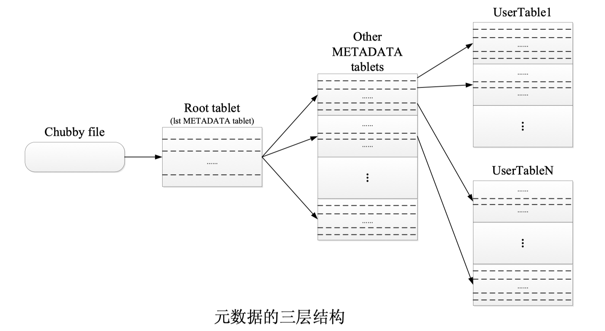
基于 GFS 存储系统的 Bigtable 的存储逻辑则如下图所示：
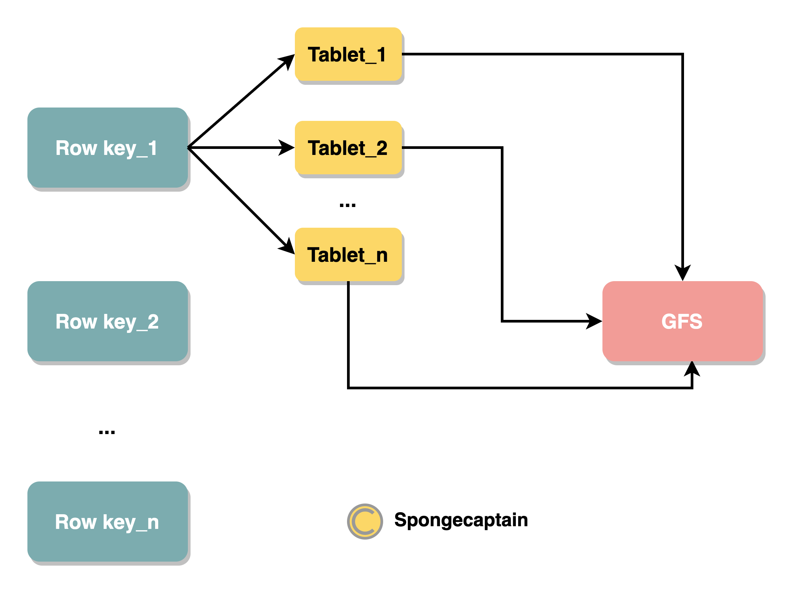
详细花了 Row key_1 的 GFS 存储逻辑，其他 Row key 有着完全相同的存储逻辑。
特点是：
- 拥有相同 row key 的键值对分为多个 Tablet 进行分布式存储（每一个 Tablet 默认大小为 200 MB），如果字节大小不足以填满 200 MB，那么也需要占用一个 Tablet 大小（这种情况不常见）；
- Tablet 是 Bigtable 中数据分布和负载均衡的最基本单位，这个性质对于 GFS 系统来说，就是 GFS 会为每一个 Tablet 默认提供 3 个副本，每一个副本尽量存储在不同机架上的不同主机的磁盘上；
4. 客户端的数据读取流程
我们之前已经提到了 Bigtable 的一大特点便是提出一种不同于传统关系型数据库的模型，即更为灵活的 Key-Value 数据存储模型，对外暴露一个逻辑上的多维表：
(row:string, column:string, time:int64) → string
因此当客户端读取数据时，在内部有如下的执行流程：
- 首先，确定 Row Key；
- 其次，根据 Row Key 查找特定的 Column Key；
- 最后，根据 colomn 以及 version 确定具体读取的内容；
这是一个多维表查询的典型过程，这个过程类似于磁盘的直接读取，先确定分区，在顺序读写。
客户端定位子表服务器时：
- 首先，需要访问 Chubby 以获取根子表地址，然后浏览元数据表定位用户数据；
- 然后，子表服务器会从 GFS 中获取数据，并将结果返回给客户端。
Bigtable 数据访问结构如下图所示。如果客户端不知道子表的地址或缓存的地址信息不正确，客户端会递归查询子表的位置。若客户端缓存为空，寻址算法需要三次网络往返通信；如果缓存过期，寻址算法需要六次网络往返通信才能更新数据。地址信息存储在内存中，因而不必访问 GFS，但仍会预取子表地址来进一步减少访问开销。元数据表中还存储了一些次要信息，如子表的事件日志，用于程序调试和性能分析。

通常而言，为了加快数据访问以及数据的分块存储管理，存储系统通常会提供各种排序逻辑，在 Bigtable 中的排序逻辑主要有三种：
- 利用 Row Key 进行排序，目的是横向化划分为多个 Tablet，避免形成超大块的数据，便于数据管理；
- 利用 Column key 以及 Column family 进行排序，目的是加快检索时的速度；
- 利用 timestamp 的天然时间线排序，目的是提供多版本控制以及过期数据的自动回收；
4. 从 leveldb 的实现来理解 Bigtable 的 SSTable 数据结构
4.1 Bigtable 中的 SSTable
Bigtable 内部采用 SSTable 的格式存储数据，子表的持久化状态信息保存在 GFS 上。那么 SSTable 的含义是什么？
论文中这样进行描述：An SSTable provides a persistent, ordered immutable map from keys to values, where both keys and values are arbitrary byte strings. Operations are provided to look up the value associated with a specified key, and to iterate over all key/value pairs in a specified key range. Internally, each SSTable contains a sequence of blocks (typically each block is 64KB in size, but this is configurable). A block index (stored at the end of the SSTable) is used to locate blocks; the index is loaded into memory when the SSTable is opened. A lookup can be performed with a single disk seek: we first find the appropriate block by performing a binary search in the in-memory index, and then reading the appropriate block from disk. Optionally, an SSTable can be completely mapped into memory, which allows us to perform lookups and scans without touching disk.
论文没有指出 SSTable 的缩写，但是通常认为其为 Sorted String Table 的缩写。SSTable 有如下的特点：
-
持久化存储：强调 SSTable 存储在硬盘上而不是存储于内存中；
-
有序性：SSTable 中的数据根据 key 进行排序；
-
不可变性；
-
纯文本存储：key 以及 value 都是以文本的形式进行存储；
-
映射式查找：通过 key 来查找 value，通过 key range 来进行范围查找；
-
分 block（块）存储：每一个 SSTable 内部分为多个 block 进行存储，默认情况下 block 大小为 64 KB（可配置）；
如果你看过 GFS 论文的话，GFS 中固定大小的 chunk 内部也分为 64 KB 的 block 进行存储管理，这一点是类似的。
-
块索引机制：在 SSTable 内部每一个 block 的索引，索引在打开 SSTable 时被加载到内存中。
将索引或者索引的一部分加载到内存中能够提高查询效率，因此今后对该索引的查询不涉及磁盘 I/O，这一点类似于 MySQL 中将 B+ 树的部分索引加载入内存中。
可以选择将 SSTable 作为整体一次性加载进内存中，不过这显然会导致内存吃紧，但是好处是通过单词磁盘 I/O 的方式进索引数据读取。
SSTable 的本质实际上就是 a set of sorted key-value pairs，SSTable 中存储的其他数据以及拥有的机制都是为了这些键值对服务。
4.2 LevelDB 对 SSTable 的具体实现
Bigtable 论文远远没有 GFS 论文写得具体，论文中并没有给出 SSTable 的具体结构，不过我们可以学习 SSTable 的开源实现，由 Google 开发并开源的 LevelDB。
下图是 LevelDB 中 SSTable 的数据结构，如下图所示：
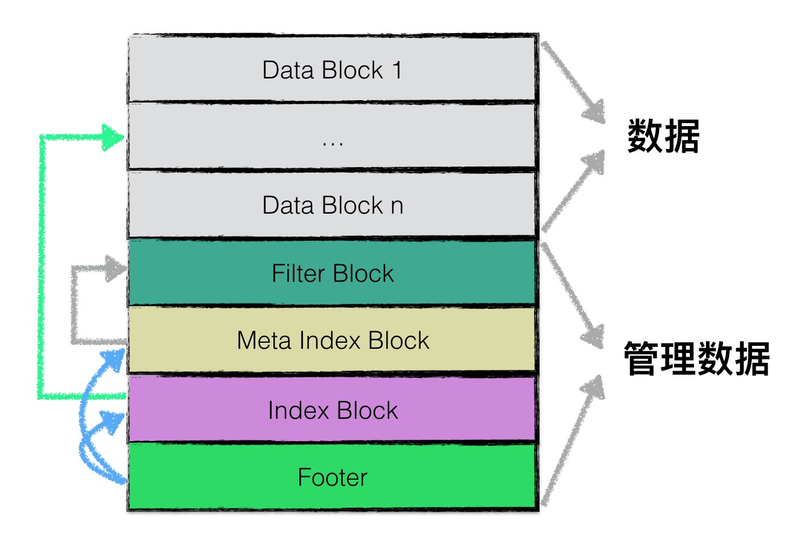
各个分块的作用为：
- data block: 用来存储 key value 数据对；
- filter block: 用来存储一些过滤器相关的数据（布隆过滤器），但是若用户不指定 leveldb 使用过滤器，leveldb 在该 block 中不会存储任何内容；
- meta Index block: 用来存储 filter block 的索引信息（索引信息指在该 sstable 文件中的偏移量以及数据长度）；
- index block：index block 中用来存储每个 data block 的索引信息；
4.2.1 data block 数据结构
对于 data block 的数据结构则如下（对于 LevelDB 而言）：
为了提高整体的读写效率，一个 sstable 文件按照固定大小进行块划分，默认每个块的大小为 4KB（这个大小比 Bigtable 论文中所说的 64KB 要小上不少）。每个 Block 中，除了存储数据以外，还会存储两个额外的辅助字段：
- 压缩类型
- CRC 校验码
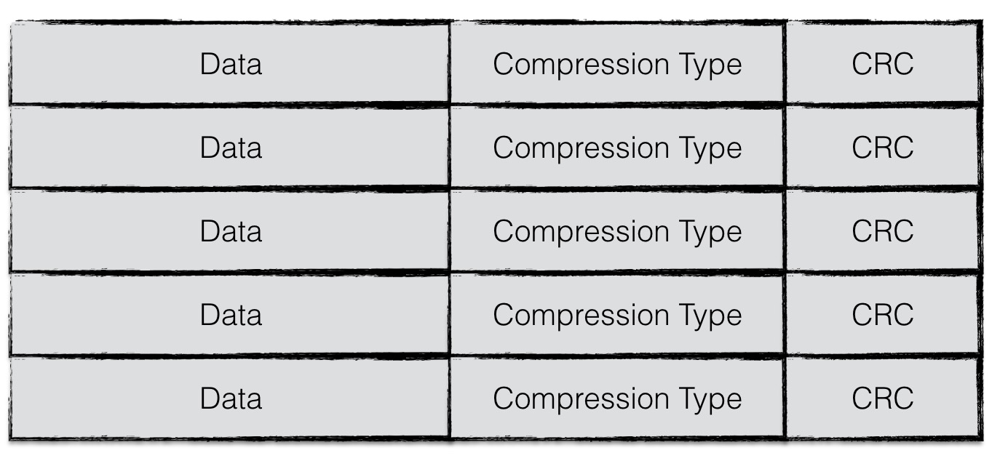
由上可见，data block 有如下的特性：
-
数据压缩：压缩类型说明了 Block 中存储的数据是否进行了数据压缩，若是，采用了哪种算法进行压缩。leveldb 中默认采用 Snappy 算法 进行压缩。
-
校验码：CRC 校验码是循环冗余校验校验码，校验范围包括数据以及压缩类型。
GFS 中每一个 block 也采用校验码，不过仅仅使用简单的 checksum，可以把 CRC 校验码看做应有层的额外校验方式。
但是我们在之前有提到，SSTable 本质上存储着一些列字符串键值对，因此上图的 Data 本质上为纯文本的 key-value 键值对。如果单独将 Data 数据列拿出来（不包括压缩类型、CRC 校验码），按逻辑又以下图进行划分：
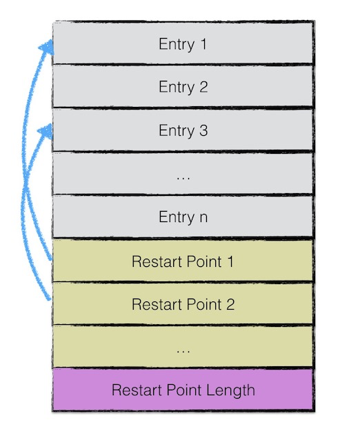
第一部 Entry * 分用来存储 key-value 数据。由于 SSTable 中所有的 key-value 对都是严格按序存储的，用了节省存储空间，leveldb 并不会为每一对 key-value 对都存储完整的 key 值，而是存储与上一个 key 非共享的部分，避免了 key 重复内容的存储。
每间隔若干个 key-value 对，将为该条记录重新存储一个完整的 key。重复该过程（默认间隔值为 16），每个重新存储完整 key 的点称之为 Restart point。Restart point 实际上连续存储，如上图的连续黄色块所示。
leveldb 设计 Restart point 的目的是在读取 SSTable 内容时，加速查找的过程。
由于每个 Restart point 存储的都是完整的 key 值，因此在 SSTable 中进行数据查找时，可以首先利用 restart point 点的数据进行键值比较，以便于快速定位目标数据所在的区域；
当确定目标数据所在区域时，再依次对区间内所有数据项逐项比较 key 值，进行细粒度地查找；
Spoongecaptain 的看法：在相同 key 规模不大的情况下这种方式查询效率不差，如果规模巨大，使用树状结构应当要好一点。
该思想有点类似于跳表中利用高层数据迅速定位，底层数据详细查找的理念，降低查找的复杂度。
每一个 Entry 的数据结构如下图所示：
一个 entry 分为 5 部分内容：
-
Shared key length：与前一条记录 key 共享部分的长度；
-
Unshared key length：与前一条记录 key 不共享部分的长度；
key lenth = Shared key length + Unshared key length
-
Value length：value 长度；
-
Unshared key content：与前一条记录 key 非共享的内容；
-
Value：value 内容；
例如：
|
|
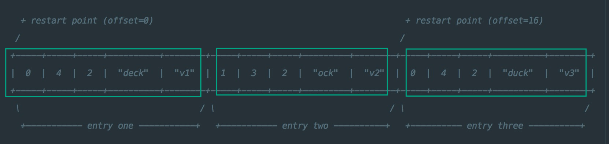
为什么能这么存储？
这得益于 key value 均为纯字符串。在数据量非常大的情况下，按照字典顺序排序的 key 通常有如下性质：前面多个字符重复。比如这里的 deck dock duck 至少 d 都是重复的，在数据量大的情况下，重复的字符数要更多，比如 Google Map、Google Images、Google Search，“Google” 为相同的长字符串。
三组 entry 按上图的格式进行存储。值得注意的是，这里的 restart_interval 为 2，因此每隔两个 entry 都会有一条数据作为 restart point 点的数据项来存储完整 key 值。因此 entry3 存储了完整的 key。
4.2.2 filter block 数据结构
讲完了 data block，在这一章节将展开讲述 filter block 的结构。
为了加快 SSTable 中数据查询的效率，在直接查询 datablock 中的内容之前，leveldb 首先根据 filter block 中的过滤数据判断指定的 datablock 中是否有需要查询的数据，若判断不存在，则无需对这个 datablock 进行数据查找。
filter block 存储的是 data block 数据的一些过滤信息。这些过滤数据一般指代布隆过滤器的数据，用于加快查询的速度。
布隆过滤器在很多场合都有使用，比如 Redis 利用布隆过滤器防止利用不存在数据的恶意攻击。布隆过滤器实现简单(基于 bitmap)，虽然不能确定数据一定存在，但是精确判定数据是否不存在。
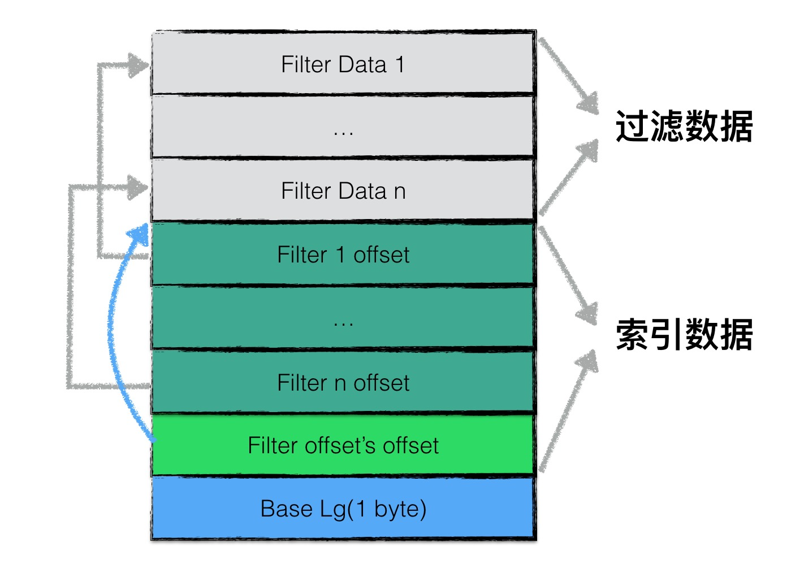
filter block 存储的数据主要可以分为两部分：
- 过滤数据；
- 索引数据；
其中索引数据中，filter i offset 表示第 i 个 filter data 在整个 filter block 中的起始偏移量，filter offset's offset 表示 filter block 的索引数据在 filter block 中的偏移量。
在读取 filter block 中的内容时，可以首先读出 filter offset's offset 的值，然后依次读取 filter i offset，根据这些 offset 分别读出 filter data。
Base Lg 默认值为 11，表示每 2KB 的数据，创建一个新的过滤器来存放过滤数据。
一个 SSTable 只有一个 filter block，其内存储了所有 block 的 filter 数据。具体来说，filter_data_k 包含了所有起始位置处于 [base*k, base*(k+1)] 范围内的 block 的 key 的集合的 filter 数据，按数据大小而非 block 切分主要是为了尽量均匀，以应对存在一些 block 的 key 很多，另一些 block 的 key 很少的情况。
leveldb 中，特殊的 SSTable 文件格式设计简化了许多操作，例如：索引和 BloomFilter 等元数据可随文件一起创建和销毁，即直接存在文件里，不用加载时动态计算，不用维护更新。
4.2.3 meta index block 数据结构
meta index block 用来存储 filter block 在整个 SSTable 中的索引信息。
meta index block 只存储一条记录：
-
该记录的 key 为：
filter.+过滤器名字组成的常量字符串； -
该记录的 value 为：filter block 在 SSTable 中的索引信息序列化后的内容，索引信息包括：
- 在 SSTable 中的偏移量；
- 数据长度；
4.2.4 index block 数据结构
与 meta index block 类似，index block 用来存储所有 data block 的相关索引信息。
indexblock 包含若干条记录，每一条记录代表一个 data block 的索引信息。
一条索引包括以下内容：
- data block i 中最大的 key 值；
- 该 data block 起始地址在 sstable 中的偏移量；
- 该 data block 的大小；
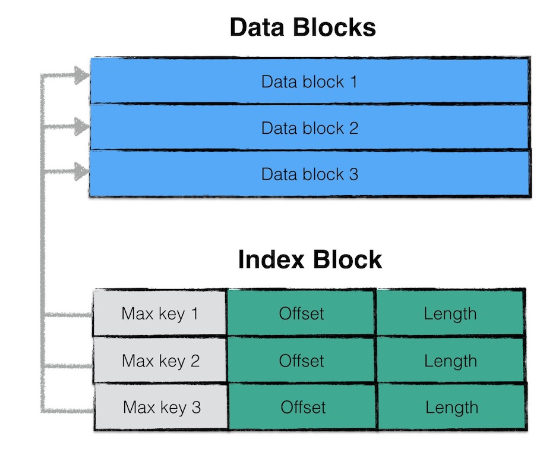
其中，data block i 最大的 key 值还是 index block 中该条记录的 key 值。
如此设计的目的是，依次比较 index block 中记录信息的 key 值即可实现快速定位目标数据在哪个 data block 中。
4.2.5 footer 数据结构
footer 大小固定，为 48 字节，用来存储 meta index block 与 index block 在 SSTable 中的索引信息，另外尾部还会存储一个 magic word，内容为：“http://code.google.com/p/leveldb/" 字符串 sha1 哈希的前 8 个字节。
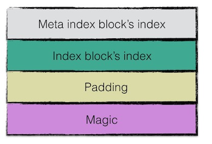
5. SStable 的 IO 方式 - Log Structured-Merge Tree
虽然 Bigtable 论文并没有非常明确地指明其 SSTable 的存储涉及的 I/O 基于 LSM 算法实现，但是事实上就是这样，Google 在多年以后对 Bigtable 的开源实现 leveldb 就一个典型的 LSM 树 (Log Structured-Merge Tree) 实现。Bigtable 特别之处就在于使用了日志结构合并树的文件组织方式。Log-Structured Merge Tree paper发表于 1996 年。LSM 树的核心思想就是放弃部分读的性能，换取最大的写入能力。
LSM 作为核心的文件组织方法现在已经被应用到大量的产品中。HBase、Cassandra、LevelDB、SQLite，甚至 MongoDB 3.0 版本在收购 Wired Tiger 引擎之后都是由 LSM 算法驱动的。。
一旦涉及磁盘 I/O，那么就避免不了一个事实：顺序 I/O 效率 » 随机 I/O 效率，如下图所示：
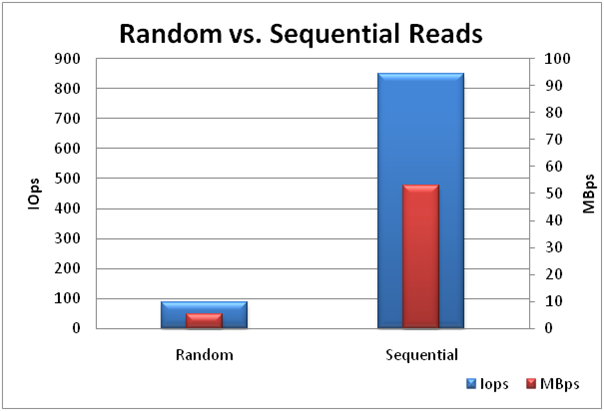
但是光讨论顺序和随机 I/O 意义并不大，因为还要考虑到是读操作还是写操作，读写数据的具体数据结构是什么。
基于索引的读写操作有如下的矛盾：
-
读操作：为了确保读操作（查询）效率高，我们通常使用索引来加快查询过程。索引的读取如果发生在磁盘中，那么因为索引信息的读取涉及随机 I/O，因此效率会比较低。为了克服这个问题，我们通常将整个索引完整地加载进内存中（MySQL 中一般是除了 leaf page 之外的索引信息一次性载入内存）；
通常还会使用占用极少内存的 Bloom Filter 来进行过滤查询请求，其基于位图实现，能够准确地判断是否没有某一条记录。
-
写操作：写入新记录时，因为索引要求的顺序性，那么不能通过顺序 I/O 实现新添加记录（例如，将新记录直接追加于原存储文件末尾（这是一种顺序 I/O）是不可行的，因为这会破坏索引对顺序性的要求），而只能通过随机 I/O 实现新记录的添加；
记录的顺序存放有利于范围查询以及符合查询特点：查询第 i 条数据后，大概率会查询第 i+1 条数据。
总结：为了读操作的效率，我们使用内存中的索引（当然也会持久化于磁盘）快速进行查找，但是却给写操作带来了随机 I/O 的麻烦。
另一方面，日志系统却没有这个麻烦，在读写两个方面效率都很高：
-
读操作：日志系统不需要使用索引来加快查询速度，因为客户端通常不会有查找具体某一条日志的需求，日志系统往往是用来持久化数据的，一旦机器宕机，重启时通过从日志系统的 checkpoint 向后执行到末尾就能够恢复数据，这是一个顺序 I/O 读取过程；
日志系统的应用领域使得日志系统不需要使用索引。但是如果你要求随机读取日志记录，那么效率会很差，因为只能顺序遍历，因此日志记录并没有索引。
-
写操作：日志系统正是因为没有索引，因此记录只有时间线的顺序，而这种顺序是天然的，只要在日志文件末尾追加新的日志记录即可，因为总是添加于文件末尾，因此这是一个顺序 I/O 写过程；
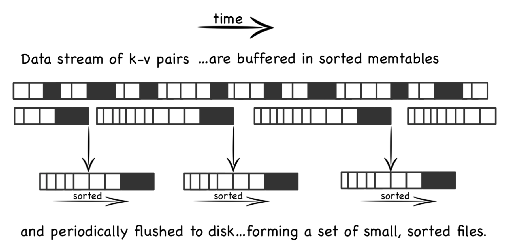
这个图来源于：Log Structured Merge Trees，表示了将内存中 memtables 定时刷新到磁盘上。
Log Structured-Merge Tree 算法的设计思想是借鉴日志系统在读写都只涉及顺序 I/O 的思想，使非日志的记录有着和日志记录一样的 I/O 效率，这就是 Log Structured（日志结构式）的含义，其设计思路是这样的：
-
内存中的索引：使用索引且将索引加载于内存中，目的是为了确保查询操作的效率；
为了避免内存浪费，索引的节点并不直接保存数据，而是保存磁盘地址。
-
内存中的缓存：内存中使用 MemTable，所有的写操作只能直接写入 MemTable 中，这样一来，即使要保持索引所要求的顺序性，因为全程在内存中进行，因此写操作的效率不会差；
内存是一种随机存储器，无论读取内存中哪一个地址上的数据，效率都是一样的。
-
磁盘中不可变的表：磁盘中的 SStable 不可修改，来自客户端的写操作请求并不能导致磁盘上的 SStable 被修改，因为一旦涉及直接对磁盘上的 SSTable 进行修改，那么必然会涉及随机 I/O；
磁盘中不可变（immutable）的 SSTable 的含义是：客户端的写操作不能直接导致修改 SStable，但是 SSTable 服务端自身可以进行存储结构的重构，比如合并操作。
-
持久化：因为新加入的数据都直接写于内存中的 MemTable 中，一旦机器宕机就存在丢失数据的风险，因此 Bigtable 服务端对于来自客户端的每一个写请求，都先通过追加日志的方式持久化，然后在修改内存中的 MemTable。这种日志通常被称为预写日志（Write-ahead logging，缩写 WAL），Wiki。
采取这种策略使客户端的每一次读写请求都仅仅涉及顺序 I/O，提高了效率，但是同时也会引入额外的复杂性。
-
读操作的优先级：所有读操作首先要查看内存中的 MemTable 是否有所需的数据，如果没有则先通过读取内存中的索引，然后在磁盘进行顺序 I/O 读；
-
定时 Flush 措施：内存中的 Memtable 一方面受到内存大小的限制，另一方面应当持久化为磁盘上的 SSTable，因此在 Memtable 达到最大内存或者时间达到的情况下应当刷新到磁盘上；
刷新期间可能会遇到并发的写请求，此时该 Memtable 是不可写的，会重新构造一个 Memtable 实例来接收写请求，Memtable 持久化完毕之后，其内存会被释放。
刷新完毕之后会有日志系统常见的 chekpoint。
-
定期的 SSTable 合并：从 Memtable 持久化来的数据一方面因为其大小不一定达到 SSTable 的默认规格（200MB），可能仅仅只有几十 MB。另一方面，Memtable 中的记录是有序的，因此利用归并等排序算法能够达到很高的效率；总之，合并多个 Memtable 对应的 SSTable 能够减少减少冗余（比如直接就忽略被标记上墓碑的键值对，墓碑概念下面马上就会提到），减少文件个数。最后，合并之后的 SSTable 还能提供局部的范围查找的顺序 I/O 性能。
还有一个问题是对于已有数据的删除和修改怎么办（之前仅仅涉及添加新记录操作）？
因为 SSTable 不可修改所以只能追加写一个新的数据覆盖老的数据，对于删除则是追加一个” 墓碑” 值覆盖掉存在的值。把索引指向新值，这样老值就不会被访问了。最后在 SSTable 合并的时候这些老值会完全消失。所以还要定期合并 SSTable。
什么是墓碑？
墓碑和新值一样的逻辑进行存储，其作为特殊的新添加记录而存在。当 Bigtable 服务端读到墓碑值时，其认为这个值意味着这个键值对已经被删除。
另一方变需要补充的是 SSTable 与 MemTable 的数据结构。因为虽然 SSTable 基于 LVM（Log-Structured Merge Tree）算法实现 I/O 逻辑，但是 MemTable 并非基于树结构，而是基于跳表结构进行存储。关于跳表，可以参考我的文章：跳表 - skip list。
其次是 SSTable 的合并操作的细节。SSTable 是分层存储的，第一层也就是 Level0 (被称作 young level)，是 MemTable 刷入的一层，允许这一层的 SSTable 的 key 有交集。对于每一层都有一个阈值 (young level 是 4，其他层是按大小算的，10^L MB)，如果超过阈值自动向下一层合并，从 level1 开始的每一次 key 不允许有交集。具体的做法是从 young level 中把有交集的 SSTable 一起和下一层 key 有交集的 SSTable 合并成一个新的 SSTable，然后其他层则是从自身层取出一个和下一层有交集的 SSTable 合并即可。这个属性可以用归纳法证明，从 0 层向 1 层合并的时候，1 层只有一个的情况下肯定不会相交，然后假设 n 个的时候也不相交，在 n+1 的时候有交集，那么 n+1 合并时有 0 层的 key 和 n 当中的有交集，但是有交集的部分会被归并掉所以矛盾，所以 n+1 个的时候也是没有交集的。那 1 层能保证没有交集的话取出一个向下合并也是类似的不会有交集。所以再重复一遍分层存储的两个属性。
分层的合并（类似于归并排序）的执行逻辑如下图所示：
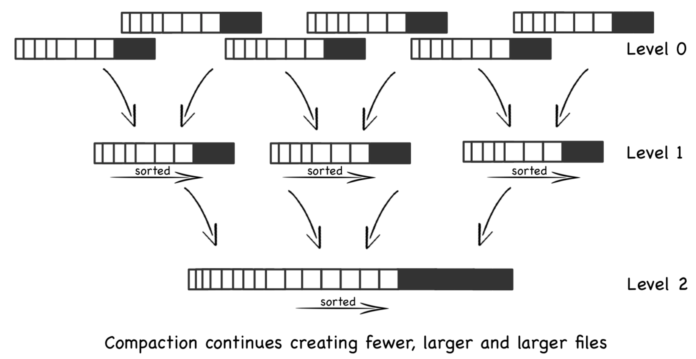
压缩多个 MemTable 对应的 SSTable 可以使得文件数更少，同时文件更大。
最后总结一下客户端读写请求的逻辑：
- 读请求：内存中索引与 MemTable 的随机读 + 磁盘上 SSTable 的顺序读；
- 写请求：内存中 MemTable 的对记录随机写 + 磁盘中堆日志文件的顺序写；
可以见得，读写请求对于磁盘来说虽然都是顺序 I/O，但是读写的目标文件是不同的。
下面分析一下 LSM 对于数据结构的考量。
LSM 将顺序写的日志使用其他数据结构来存储。对于通过 key 来查询的应用，通常 HashMap 比数组有着更好的性质，前者时间复杂度为 O(1) 而后者为 O(N)，能够提高查询效率的做法一共有：
- 有序数组+二分法查找：数组基于 key 进行排序，我们查询特定 key 的记录时，使用二分法就能将数组的查询降低至
O(log2N)； - Hash：Hash 表在 Hash 冲突不严重时就是
O(1)，当存在 Hash 冲突时桶结构为延伸为红黑树，性能要差一些； - B+ 树：可以认为是红黑树（红黑树是一种自平衡二叉查找树）的改进版本，对于树的高度进行了一定的限制；
- 跳表 - skip list 则可以见我的另一篇文章。
对于上述做法，所有新节点的加入都是随机写，具体来说：
这里我们假设这个数据量非常大，并没有能力全部读入内存。另一方面，假设内存没有缓存机制，每一次的读写都需要进行磁盘 I/O；
- 有序数组：加入一个元素时首先进行二分法的比较，然后进行新节点的插入。因为插入操作不一定在数组尾部插入，因此会导致随机写；因为二分法中数组索引不是连续变化，因此二分法比较涉及随机读；
- Hash：插入操作需要将 key 的 hash 值对应的索引处的 key 值进行比较，以检查 hash 冲突问题。因为每一个节点插入的索引位置不固定，因此涉及随机读；
- B+ 树：B+ 数类似于 Hash，其插入新元素时会涉及比较 key 值，因为每次插入时比较 key 的过程不同，因此也涉及随机读；
通过上述分析，可见顺序性是上述数据结构的共同特性，带来了查询操作的复杂度从 O(N) 变为 O(log2N) 的同时，也带来了缺点：写入操作涉及随机 I/O，效率比顺序 I/O 差很多。
数据结构的顺序性要求：新添加的节点元素需要放在特定的位置上，而不能按照加入的顺序依次摆放，这在逻辑上就限制了写操作避免不了随机 I/O。
最后，我们来看看来自 Bigtable 论文中的示意图：
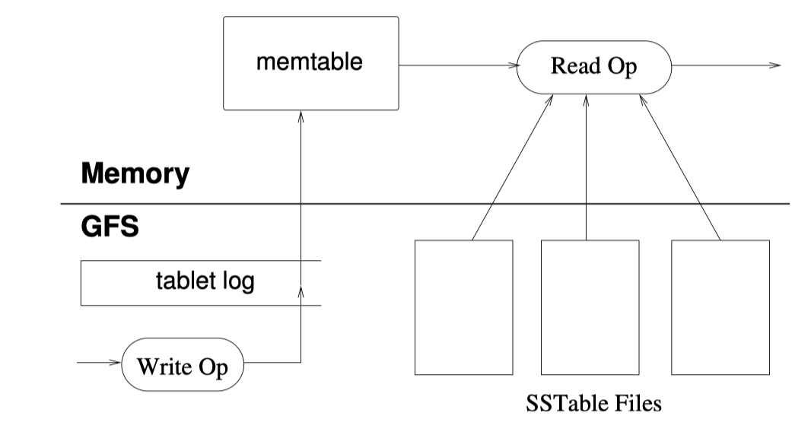
如果没有前面知识的铺垫，这个图可能略抽象，但是现在可以说是清晰可见了，特点是：
- Write Op：示意图中写操作的数据流也来自于 GFS 文件系统，首先写入也存储于 GFS 日志系统中(磁盘中)，然后写入内存中的 Memtable。此时写操作已经结束了，没有涉及将记录直接写入 SSTable 中的步骤；
- Read Op：读操作的数据来源可以是内存中的 Memtable，也可以是磁盘中的 SSTable；
6. 性能测试
Bigtable 集群中的主机的性能为：
-
1786 台 Tablet server 主机的性能：1 GB 的内存，两个 400 GB 的 IDE 硬盘，双核 2 Ghz 处理器，内存足够（论文没有指出具体多少）；
这些主机可以是：master、test clients、tablet server，甚至一台主机可以担任多个角色。
-
交换机网络：两级树型交换网络，拥有 100-200 Gps 的总带宽；
其他测试条件这里就不一一列出了。
论文中的测试结果如下图所示： 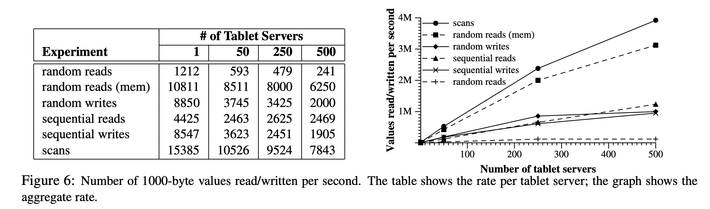
左表中数值的含义是每一台 Table Server 上 1000-byte 读或写操作 在一秒中发生的次数（平均负载）：
-
横向来看：随着 Tablet Server 数量的增多，每一台机器的负载都有所下降。
-
纵向来看：扫描 > 内存中的随机读 > 随机写 ≈ 顺序写 > 顺序读 > 随机读；
顺序写和随机写有着近似的效率，这是因为来自客户端的写操作并不会直接导致在磁盘中进行写操作，而是仅仅写入内存。
右图中纵坐标含义为整个系统发生的 1000-byte 读或写操作在一秒中发生的次数（系统负载）：
- 横向来看：随着机器数量的上升，各项指标也会随之上升。但是注意，随着机器数达到 250 台，上升的速率均会下降；
- 纵向来看：扫描 > 内存中的随机读 > 随机写 ≈ 顺序写 ≈ 顺序读 > 随机读；
7. Bigtable 设计的” 得” 与” 失”
特别注意：本小节属于完全转载内容：Bigtable 设计的” 得” 与” 失”，非原创。
1.Non-SQL 接口
提供自定义的数据读写接口而非用户已习惯的 SQL 接口，会带来额外的学习成本。
MegaStore 论文中关于 Bigtable 的评价：
Even though many projects happily use Bigtable, we have also consistently received complaints from users that Bigtable can be difficult to use for some kinds of applications: those that have complex, evolving schemas, or those that want strong consistency in the presence of wide-area replication.
2.Master-Slave 架构
关于该架构的优劣已经存在很多的探讨，这里不赘述。
3.Schema Less
Bigtable 本是为结构化数据存储而设计的，却采用了 Schema Less 的设计。论文中提及的关于网页数据存储的场景，应该是促成该设计的最大因素。另一方面，可以猜测，Schema 变更在 Google 内部是经常发生的。所以，最后选定了 SSTable (在 Google 内部先于 Bigtable 而出现) 作为底层的文件存储格式。
该设计的优势在于能够支持 Schema 的灵活变更，不需要预先定义 Schema 信息。
但该设计的缺点也非常明显：
- Key-Value 中携带了充分的自我描述信息，导致数据有大量的膨胀。
- 在数据压缩粒度上比较受限。
4.Range 分区
优点：
- Range 分区能够很好的保证数据在底层存储上与 Row Key 的顺序是一致的，对 Scan 类型查询比较友好。
缺点：
- 对用户 Row Key 的设计提出了非常高的要求。
- 容易导致数据不均匀。
5.事务支持
Bigtable 论文中提到仅需要支持单行事务的设计初衷：
We initially planned to support general-purpose transactions in our API. Because we did not have an immediate use for them, however, we did not implement them. Now that we have many real applications running on Bigtable, we have been able to examine their actual needs, and have discovered that most applications require only single-row transactions.
正是在 General-purpose Transaction 的驱使下，产生了后来的 MegaStore 以及 Spanner。Jeff Dean 在 2016 年的采访中表示没有在 Bigtable 中支持分布式事务是最大的一个设计遗憾：
“What is your biggest mistake as an engineer?”
Not putting distributed transactions in BigTable. If you wanted to update more than one row you had to roll your own transaction protocol. It wasn’t put in because it would have complicated the system design. In retrospect lots of teams wanted that capability and built their own with different degrees of success. We should have implemented transactions in the core system. It would have been useful internally as well. Spanner fixed this problem by adding transactions. — Jeff Dean, March 7th, 2016
从业界已广泛应用的 HBase 的应用场景来看，单行级别的事务还是可以满足大多数场景的，也正因为放弃了对复杂事务的支持，Bigtable/HBase 才能够取得吞吐量以及并发上的优势，正如上述观点中提到的，Bigtable 不加入分布式事务是不希望系统变得复杂。
Jeff Dean 将 Bigtable 不支持分布式事务视作是一大设计遗憾，相信该观点只是针对 Google 内部的应用场景需求而言，HBase 的广泛应用恰恰佐证了 Bigtable 的这一取舍是一条正确的路。就像当年 Cassandra 因最终一致性的设计惨遭 Facebook 内部遗弃，但后来在 DataStax 的扶持下依然得到了大量用户的追捧。Google/Facebook 内部场景的特殊性，以及在这种场景下所产生的技术与观点，在很多时候并不具有普适性的。
6.计算与存储分离
Tablet Server 中仅仅提供了数据读写服务入口，但并不存储任何数据，数据文件交由底层的 GFS/Colossus 来存储，可以说，这是一个典型的计算与存储分离的架构。
该架构优点：
- 分层设计，每一层更专注于自身的业务能力。
- Tablet 在 Tablet Server 之间迁移时，不需要移动底层的数据文件。
- Tablet Server 故障不会导致数据丢失问题。
- 可更充分的利用每一层的资源，降低整体的成本。
- 更适合云上服务架构模型。
缺点：
- 更多的网络开销。
7.可用性
存储于底层 GFS 中的文件有多个副本，但 Tablet 本身却是单副本的，当 Tablet Server 故障或因负载均衡原因对 Tablet 进行迁移时，就会导致 Tablet 短暂不能提供读写服务，带来可用性问题。
本文的引用：